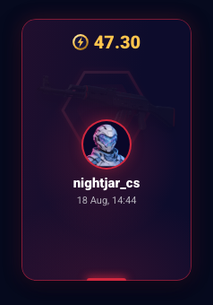
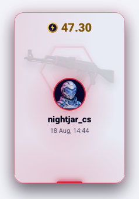
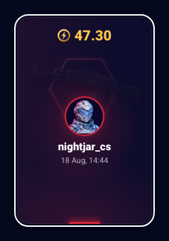
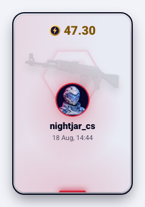

Recent drop card
One best drop of a case: the value first, the skin in its tier's ring, the gun and the skin, the moment it dropped. The whole card is the link to that round. Pointed at, the skin falls back and who won it, and when, stands over it. Everything on this page is drawn by design/system/components/recent-drop-card.css through index.css, the same file a screen will load.
Anatomy

The card holds three atoms and never redraws them: the Figure (the value, .fig--money at .fig--title), the Media slot (the skin, .media--skin) and the Avatar (the winner, at its L size, .avatar--l). The card's own part is its shape and its tier: the ground, the foot bar, the ring and the fill round the skin, the winner's face that stands over the drop, and the ring in the tier round the avatar.
| Part | Class or element | What to change there |
|---|---|---|
| The card | .recent-drop.recent-drop--r1 to --r7 (an <a>) | the tier colour, the ground in the tier, the corner (--radius-m), the lift under the pointer; one link for the whole card |
| Value | .fig.fig--money.fig--title.recent-drop__v (Figure) | the size is the Figure's (--title, 18px on a phone by the card's own rule); the 6px gap to the coin is the card's |
| Skin and ring | .media.media--skin.recent-drop__art (Media slot) with .recent-drop__plate and .recent-drop__ring | the tier's fill and its hexagon ring; the skin falls back to a faint .14 when the winner stands over it |
| Name | .recent-drop__w and .recent-drop__s | the gun in small capitals, the skin in white; both go out under the pointer |
| Winner's face | .recent-drop__who | the tier's light behind it; it comes in under the pointer or on focus. With no pointer to hover with it is not drawn and the moment stays at the foot |
| Winner | .avatar.avatar--l (Avatar) and .recent-drop__wn | the avatar is the atom's L (52px); the tier ring round it and the gap under it are the card's |
| Moment | .recent-drop__t | when it dropped, tabular figures; at the foot of the card, or in the winner's face |
| Tier bar | .recent-drop::after | the short bar on the foot in the tier's colour and light |
Variants and sizes
One axis of data, one form. The tier is the item's, not the screen's: it colours the ring, the bar, the edge and the winner's light, and a screen never chooses it. Widths and heights are read from the rendered cards, not from the stylesheet.
- Tier = the item's own.
--r1the rarest to--r7the commonest; tiers 4 and 5 read the lit steps--bg-rarity-4-litand--bg-rarity-5-lit, as on the Drop card. - One form. The card has no row form: it stands in a strip (Recent drops, round 3) and fills the cell the strip gives it, to its height. Under 600px its padding, its value (18px), its skin (96px) and its skin name tighten by the card's own rule.


At rest the winner's face is hidden on a pointer device; the moment sits at the foot. Point at a card, or Tab to it, to see the winner.
When to use
To show the best drops of a case, newest or largest first, so a person sees that big drops happen and who got them: the value, the item and, one point away, the winner and the moment. It is evidence, and it links to the round's public result, where the draw can be checked (design principle 1). The values and the names on this page are samples (D-124). A value that cannot be read is drawn as a missing Figure, never as a zero.
Rule and anti-rule
Use it
Best drops of this case: one card per drop in the Recent drops strip, each the link to its round. The winner is the Avatar, the value a Figure, the skin a Media slot.
Take another component
An item a case can pay, with its chance, is a Drop card. A drop in the live ticker, across all cases, is a Feed tile. A prize on the outcome screen is an Outcome card. An item a person holds is an Item card.
States
Live at rest, on this page's theme: point at the card, reach it with Tab. The page does not run the product's script; hover and focus are CSS and need none.
Snapshots of the same instance, dark on the left and light on the right, taken with reduced motion so each shows the face the state settles on. The base set is shot once on the card.


--depth-card-hover, --bg-rarity-2, --text-hi

--line-focus- The same answer, said once: the tier colours it in every tier; only the tier 2 card is shot. With no pointer (
hover: none) the winner's face is not drawn and the moment stays at the foot; that is a media feature, not a state to shoot here. - No press look, no disabled look. kit.css draws no press; a card that links to a round has nothing to refuse (D-58).
- Reduced motion turns the lift and the fades off.
node design/kit/tools/shoot-states.js http://localhost:8765/ recent-drop-card # re-shoot after a change to recent-drop-card.css or its tokens node design/kit/tools/shoot-states.js http://localhost:8765/ recent-drop-card --check # step 9: fails if a snapshot drifted
In the code
| Token | Kind | Dark | Light |
|---|
Read live from tokens.css. The card needs no component token: every state found its role. Geometry, type and motion come from the primitives and the block (--recent-drop-who-top); the avatar's 52px is now the Avatar's own (--avatar-l, rename map row 15). The lift under the pointer reads the state token --depth-card-hover, made once in round 2 for this card and the Drop card (D-265). No colour primitive is read.
File: design/system/components/recent-drop-card.css, loaded by design/system/index.css in the molecules' group.
<a class="recent-drop recent-drop--r2" href="..."> <span class="fig fig--money fig--title recent-drop__v"><span class="fig__v"><span class="icon icon--coin"></span>47.30<span class="recent-drop__sr"> coins</span></span></span> <span class="media media--skin recent-drop__art"><span class="recent-drop__plate"></span><svg class="recent-drop__ring">...</svg><img src="..." alt=""></span> <span class="recent-drop__w">AK-47</span><b class="recent-drop__s">Redline</b> <span class="recent-drop__who"><img class="avatar avatar--l" src="..." alt=""><span class="recent-drop__sr">won by </span><b class="recent-drop__wn">nightjar_cs</b><span class="recent-drop__t">18 Aug, 14:44</span></span> </a>
Stands on: the case screen, Deposit, Sign in. Until step 8 those screens still read kit.css; step 6 moves their markup onto this file's forms by the rename map (rows 15 and 28). The strip that places the cards (.recent-drops) is an organism of round 3.